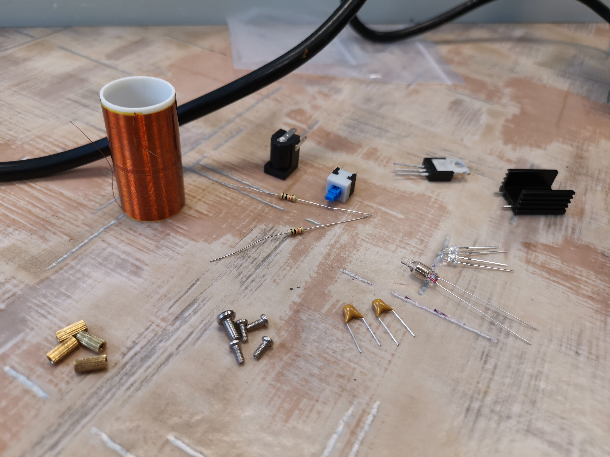

HOME |
DOGA2 |
Astabil multivibrátor
DOGA2 |
DOGA2 |
Tekercs és az alkatrészek
Alkatrészek:
-1db ellenállás
-1db kondenzátor
-1db tranzisztor
-1db LED
-1db tekercs
-1db nyomógomb
 |
A munka felénél
 |
Saját vélemény/tapasztalatok:
Számomra nekem ez volt az edigi legérdekesebb feladat és a legélvezhetőbb is
A tekercs ragasztásán kívül mindent én csinéltam, de legközelebb remélem már azt is meg tudom csinálni.